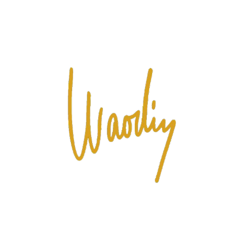

Zítra možná nepřijde
Memento Mori

Zítra možná nepřijde
Kolikrát sis řekl „zítra začnu“? Zítra vstanu dřív. Zítra zavolám tátovi. Zítra začnu makat na sobě. Zítra se omluvím. Zítra už fakt přestanu s těma sračkama. Jenže... co když zítra nepřijde? Co když dneska večer naposledy zavřeš oči?
Smrt není daleko
Nechodí s kosou a černým pláštěm. Nezaklepe dopředu. Přijde v tichu. V momentě, kdy to nejmíň čekáš. V okamžiku, kdy sis zrovna říkal, že „máš čas“.
Možná tě smete infarkt. Možná bouračka. Možná rakovina, o které ještě nevíš. Možná prostě usneš a už se neprobudíš.
Tohle není dramatizace. To je realita. A většina lidí na to radši zapomíná, protože je to nepohodlné. Ale chlap, co nechce žít v iluzi, si to připomíná. Každý den.
Memento Mori = buď vzhůru
„Pamatuj na smrt.“ To není negativní heslo. Je to výzva. Budík.
Neztrácej čas. Neválej se v lítosti. Nečekej na ideální podmínky. Neodkládej to, co víš, že máš udělat.
Smrt ti nebere, ona ti dává:
- odvahu říct věci, které držíš v sobě
- sílu vstát a začít žít jinak
- pokoru před každým ránem, které ještě přijde
Každý den navíc je bonus
Dnešek jsi dostal navíc. Miliony lidí už ho nezažijí. Ty jo. Tak ho neproser. Nezahoď ho ve feedu, v gauči, v blbých výmluvách.
Zítra možná nepřijde.
Ale dnešek ještě můžeš využít.
Až budeš umírat...
...bude jedno, kolik jsi měl peněz.
...bude jedno, jaký auto jsi řídil.
...bude jedno, co sis říkal, že „někdy“ uděláš.
Bude záležet jen na tom, jestli jsi žil naplno. Jestli jsi miloval, makal, odpouštěl, riskoval, tvořil, chránil, padal a zvedal se.
Tohle všechno můžeš udělat ještě dneska. Ale zítra už možná nebude šance.
Memento Mori.
Žij tak, abys nemusel litovat.
